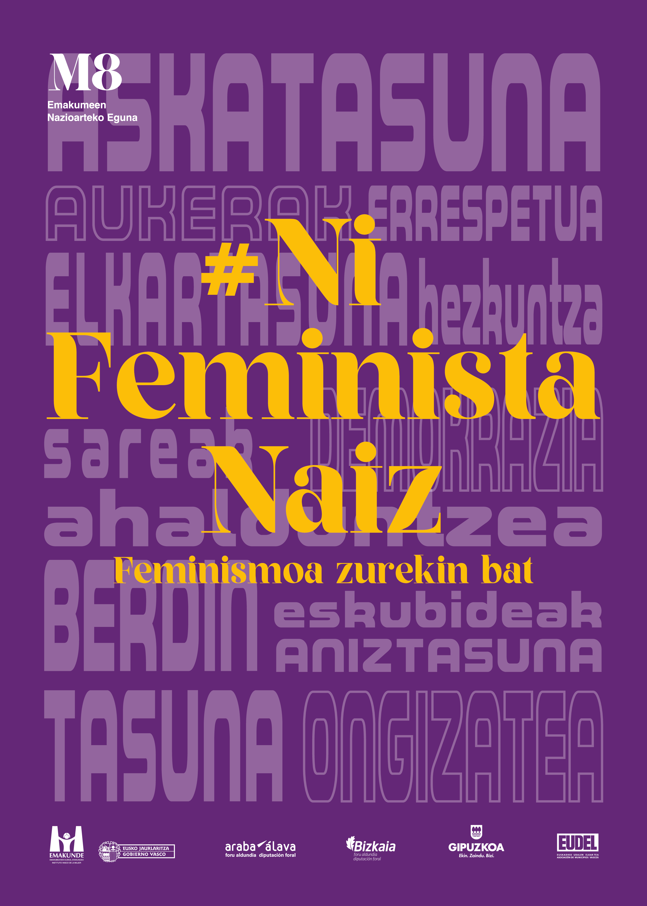

Bilbao pone en valor las alianzas entre mujeres
Una expresión que reivindica la posición que las mujeres ocupan en esta sociedad.

Necesidades
- Reducir distancias ideológicas, económicas, sociales, culturales o físicas entre las mujeres
- Crear redes de apoyo
- Generar espacios de confluencia y relaciones entre diferentes colectividades de mujeres
- Reforzar el empoderamiento, individual y colectivo
Imagen de esta campaña 2025
- El feminismo va contigo.
- Reivindicar la aportación del feminismo a la sociedad.
- Poner en valor los avances conseguidos en materia de igualdad.
- Mostrar que los valores del feminismo tienen un poder transformador en la vida diaria de las personas.